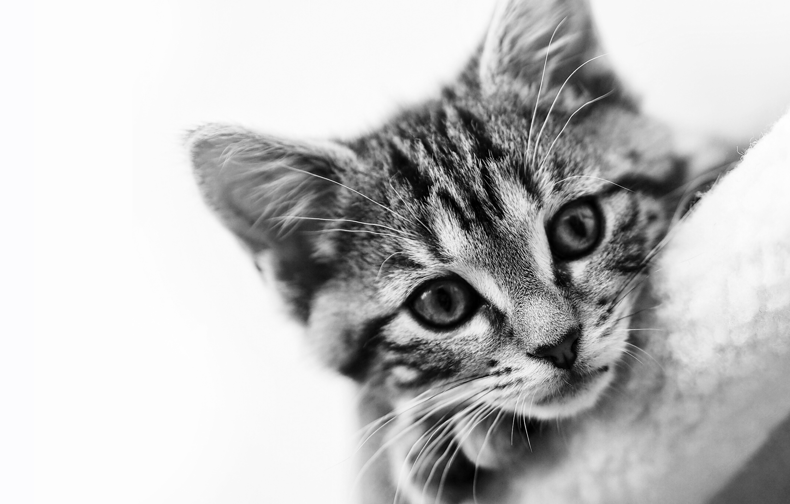

Gösta

A kitten is a baby cat. There is nothing more adorable then a bunch of fuzzy little kittens playing together. While there are a few other animals whose young are called kittens, like beavers, rabbits, and rats, the word most commonly describes a baby cat.
Svante

A kitten is a baby cat. There is nothing more adorable then a bunch of fuzzy little kittens playing together. While there are a few other animals whose young are called kittens, like beavers, rabbits, and rats, the word most commonly describes a baby cat.
Justice
A kitten is a baby cat. There is nothing more adorable then a bunch of fuzzy little kittens playing together. While there are a few other animals whose young are called kittens, like beavers, rabbits, and rats, the word most commonly describes a baby cat.